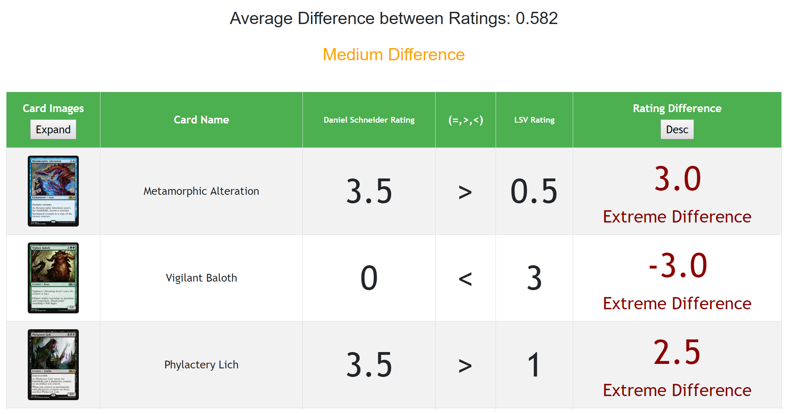
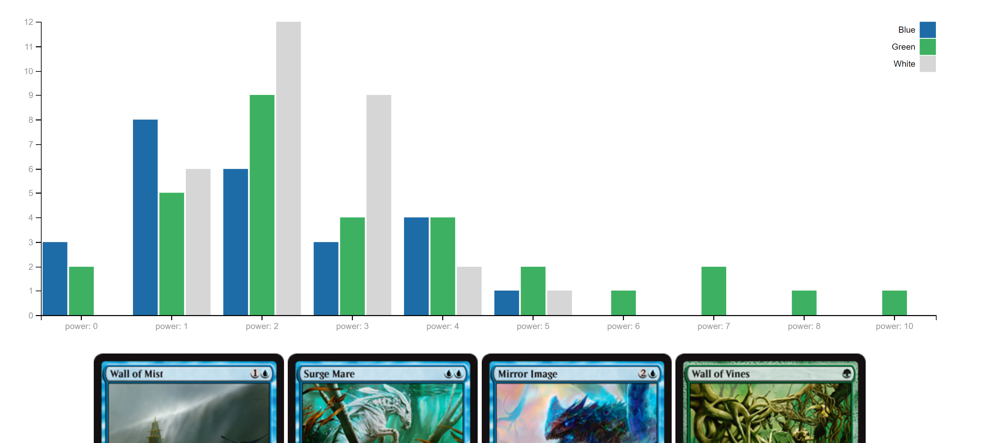

We created this site to provide a resource for Magic the Gathering Limited players to pool knowledge and view cards for a given set.
This site allows you to review MTG cards in a set and compare your reviews to both professionals (LSV and Limited Resources) and your friends. Guidelines for reviews found here.
Randomly review cards in a given set one-by-one and compare how your picks line up with LSV and average ratings.
Review all the cards in a set. Once you are done check out how your review compares to others.
Compare your set reviews to your friends, professionals, and the average user. Find cards you might have over or undervalued.
View all the cards of a certain set, and filter by power, toughness, color, and other characteristics.
